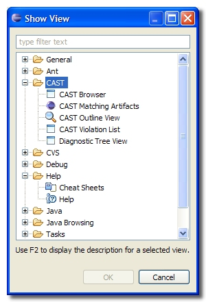
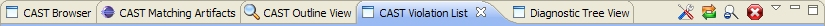

Display the CAST Plug-in views
The CAST Plug-in for Eclipse provides various new Eclipse views. You need to
tell Eclipse to display these views before you can start using the plugin:
- Click Window > Show View, then select Other
- A new dialog box will be displayed listing all available views:

- Find the CAST node and expand it to show all CAST views
- Select all views while holding down the CTRL key, then click OK.
- The new views will be displayed:

- See Using the CAST Plug-in for Eclipse
for further information.